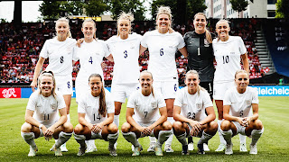
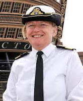
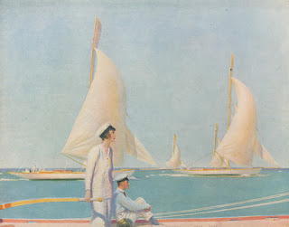
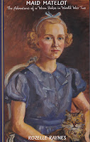
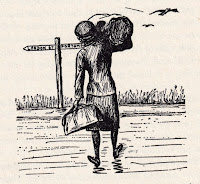
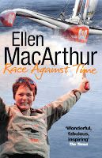

 |
| Photo to accompany Lionesses' letter to the candidates for PM, asking for better opportunities for girls football |
{kind=link}
Not everyone was prepared to
gloss over past rejections. The clubs who’d refused to host their games because
‘no one’s interested in women’s football,’ weren’t going to be forgiven and
forgotten, as the team packed Wembley Stadium with a record 87,192 attendance and
won the first major competition for England since 1966. Former player turned
presenter, Alex Scott, said, ‘Let’s just remind ourselves as well, back in 2018,
we were begging people to host in their stadiums a women’s game for this Euros.
So many people said no. I hope you are all looking at yourselves right now
because you weren’t brave enough to see what it could have been’.
I felt ashamed that I had no idea women’s football had been
banned by the Football Association from 1921 – 1970. Women’s teams had played
with great success during WW1, filling stadiums and raising money for the war
effort. But in 1921 the FA ruled that ‘the game was quite unsuitable for
females and ought not to be encouraged.’ There was also a financial swipe that ‘an
excessive proportion of the receipts are absorbed in expenses and an inadequate
percentage devoted to charitable objects.’ Did the women get match fees? I hope
so. Although some male football players had been able to turn professional in the
1890s, England’s Lionesses have only regularly been paid salaries since the
formation of the Women’s Super League in 2011. A recent Telegraph
sports report states that salaries range from £20k - £200,000k across the
12 clubs of the SL. Presumably they’ll be asking for a little more now.
Though the women’s game continued despite the ban, they were
not allowed to play on any of the grounds owned by FA member clubs. It brings
to mind the situation faced by women sailors, excluded by so many yacht clubs
for so long – as women historically have been denied entry to many sporting,
social, artistic, educational and political societies. Why would any woman want
to join places that behave like that? It’s a reasonable response, but if
membership gives access to the best facilities, and training and participation
opportunities for the activity you love, then exclusion matters.
Even socially it’s humiliating to be told to use different
entrances, denied voting rights, treated as Other – and, essentially, as Less. As
a writer I’m feeling excited to have been asked to go and talk about Uncommon
Courage to the Royal Yacht Squadron’s book group in Cowes next month – as I
would be to any knowledgeable and well-informed group which pays me such a compliment
of interest. As a woman, I note that until 2014, almost 200 years after the RYS
foundation, even the Queen, its patron, would not have been eligible for
anything other than Associate Membership, solely by virtue of her gender. Traditionally
the monarch would also be the RYS Admiral, but how awkward when George VI died
in 1952, that Elizabeth was female. Fortunately, she had a husband to take on
the role.
 |
| Rear Admiral Jude Terry |
{kind=link}
This year, 2022, the Royal Navy has appointed its first female
admiral, Jude Terry, and at the end of Cowes Week 2022 it was Princess Anne
taking the salute, accompanied by her husband – not the other way round. I
spotted a claim in the Cowes Week social media that 40% of the competitors
racing this year were female. That's a wonderful leap from the Ladies' Lawn straight into the water. I’ve tried ringing to check but understandably no
one’s answering their phone today. Cowes Week Ltd and the RYS are quite separate
organisations but the increasing success of women in high performance sailing is
exciting and spearheaded by the brilliant sailors of the 1990s such as Ellen
MacArthur, Dee Caffari and Tracy Edwards. Like the football Lionesses, today’s
young female sailors owe a great debt to the passion and tenacity of C20th
pioneers.
The Little Ship Club in London is approaching its centenary
and should feel retrospectively proud that it has admitted female members on
the same terms as male since its foundation in 1926. I wonder to what extent
this decision sprung from the ethical ferment around women’s right to vote on
the same terms as men (achieved 1928), or whether it was a shrewder commercial
decision by one of the co-founders, Maurice Griffiths.
Griffiths was a great market-maker to whom the more budget
conscious members of the yachting community owe a debt of gratitude. In his first
book, Yachting on a Small Income (1925) he expressed a vision of sailing
that was not solely focussed on ‘those expensive white things that flutter
about the Solent and cost someone hundreds a year to run’ but which promoted ‘thoroughly
enjoyable weekends and holidays afloat in one’s own little floating home on a
bank clerk’s salary’. Chapter 10, the
Feminine Owner, implicitly recognises that ££ which might be spent by a woman
on buying or commissioning a yacht have the same market value as ££ that could
have come from the wallet of a man. The prospective female purchaser is advised
to ‘lay her requirements before a competent man’ or join the Little Ship Club,
annual subscription one guinea.
Reading Griffiths today I frequently squirm at his language, as a child, absorbed in his Ten Small Yachts (1933), one of my all-time favourite books, I felt thrilled by the concept of a marriage where each partner had his / her own boat. Even then, however, I was dimly aware of a certain embitteredness of tone as he admitted that his wife ‘Peter Gerard’ (Dulcie Kennard) preferred hard-sailing her deep-keeled Juanita far out to sea, whereas he loved nosing around the East Coast creeks and swatchways, with a bright cabin and a savoury stew at the end of the day or a trip ashore to a waterside pub. They were divorced in 1934.
 |
| 'The Ladies Race' by Charles Pears. He was Dulcie Kennard's 2nd husband. She may be the model in this painting |
{kind=link}
Admitting women to club membership, to yacht ownership, to
readership of Yachting Monthly was not necessarily the same as
validating their achievements or ensuring equality of
opportunity. Five years ago, in August 2017, I was offered a dream job as ‘literary
contributor’ to Yachting Monthly, the magazine Griffiths had edited into
the 1960s. My initial task was to select each month’s ‘Book at Bunktime’ (BABT) and choose
an extract which would alert readers to the fine writing and thrilling
adventures of the past. The feature had been running for four years but when I
looked at the 48 books already presented, I noticed that only two had been
written by women. (There was also a journal excerpt from a book which had never
finally materialised.) I turned to the iconic Mariners Library series published
between 1948-1968 and discovered the same proportions – two of the 48 titles
had female authors.
Fast forward five years, with the enthusiastic co operation of the magazine’s editors, and the proportion has improved. Of the 67 BABTs published since August 2017, 21 are by women writers with a further 2 jointly authored. (And if you wonder how five years can include 67 titles I have to tell you that the Yachting Monthly year has 13 months and we are so far ahead of ourselves that the selection I make this month will be for the November issue – to be published in October. I can only assume that this system is deliberately chosen to ensure the magazine’s staff maintain the mental agility needed to allow for Deviation and Variation, Magnetic and True when calculating compass courses...)
 |
| Rozelle, painted by her mother before she achieved her Freedom. Our publication date 25th August, commemorates the date the WRNS accepted her in 1943. |
{kind=link}
The % of books by women disinterred from the earlier part of the twentieth century remains low. Looking at my selection I see that 2 were published before 1950, though several refer to events that happened before that date. Later this month Golden Duck will republish Maid Matelot, Rozelle Raynes’ account of her WW2 service as a 17-year-old Wren Stoker, first published in 1971. Her cousin, Olympic rower, Hugh Matheson describes it as ‘a shout for freedom’.
Here’s the author’s preface:‘It was a black stormy night, with the wind blowing great guns from the south-west and an anti-aircraft gun on the end of Ocean Dock firing at a lone German raider somewhere up above the constellation of Orion. There was quite a sea running with the wind against the tide, and clouds of solid spray burst across the bows of our boat from time to time, causing a rivulet of icy water to funnel off the rim of my tin helmet into a small persistent channel which found its way inside my oilskin collar and, eventually down the back of my neck. I leant over my beloved charge, an old 4-cylinder Kelvin engine, to make sure the pistons were still singing their rhythmic song, despite the fury of the elements; and suddenly I realised that this was my ideal situation in life…’
 |
| Boats Crew Wrens no longer required |
{kind=link}
I hope someone is writing a history of the c20th football pioneers; I think there’s plenty more to be learned about the experiences, achievements and attitudes of the c20th Lionesses of the Sea..
 |
| Lioness of the Waves? |
{kind=link}
Please visit our website https://golden-duck.co.uk/